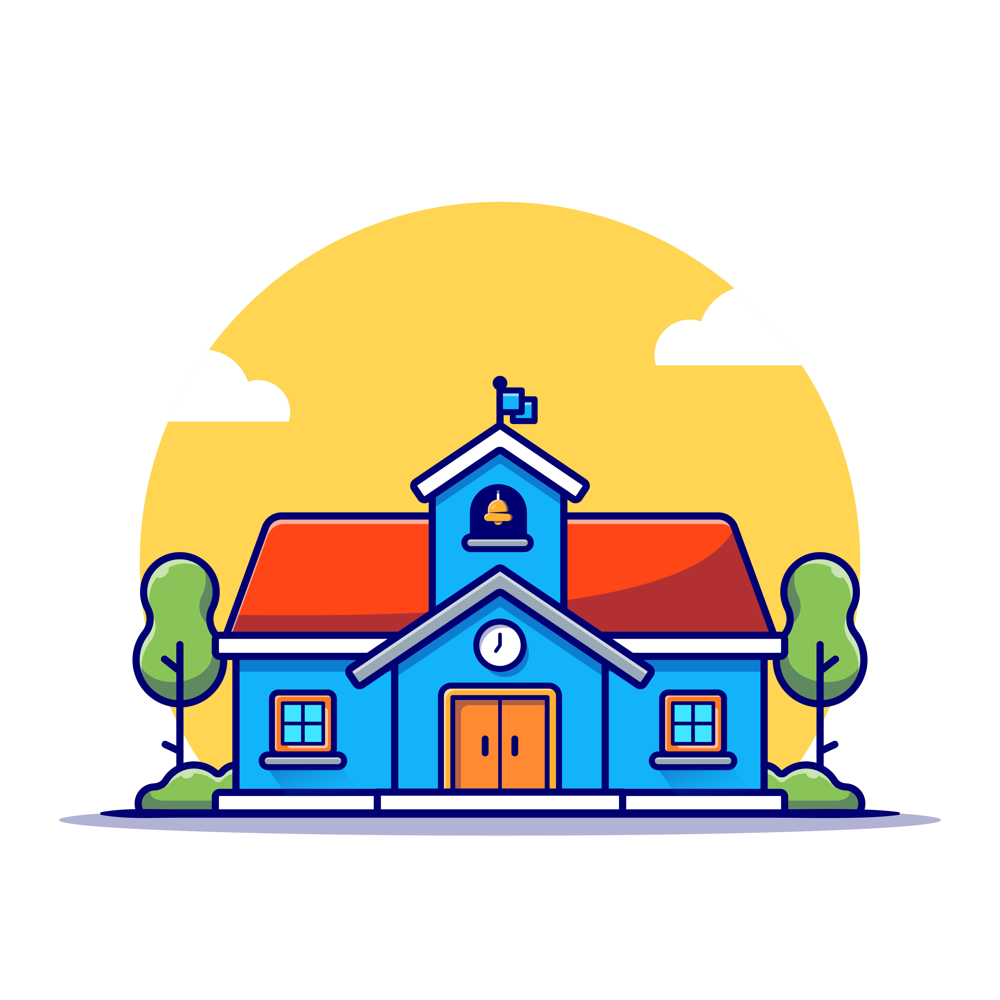

<html lang="ru"></html>
<head>
    <script src="https://cdn.jsdelivr.net/particles.js/2.0.0/particles.min.js"></script>
    <link rel="preconnect" href="https://fonts.googleapis.com">
    <link rel="preconnect" href="https://fonts.gstatic.com" crossorigin>
    <link href="https://fonts.googleapis.com/css2?family=Roboto+Condensed:ital,wght@0,100..900;1,100..900&display=swap" rel="stylesheet">
    <link rel="stylesheet" type="text/css" href="style.css">
    <link rel="stylesheet" href="https://cdnjs.cloudflare.com/ajax/libs/font-awesome/6.4.2/css/all.min.css">
    <meta charset="UTF-8">
    <meta name="viewport" content="width=device-width, initial-scale=1.0">
    <title>Умная Камера</title>
    <script src="JS.js"></script>
</head>
<body>
    <div class="header">
        <div class="header-line">
            <div class="header-logo">
                
            </div>
            <div class="logo">SmartCam</div>
        </div>
        <nav class="navbar">
            <div class="container">
                <div class="navbar-links">
                    <a href="#about">Новости</a>
                    <a href="#team">Команда</a>
                    <a href="#faq">Вопросы и ответы</a>
                    <a href="#contact">Контакты</a>
                </div>
            </div>
        </nav>
        <div class="navbar-actions">
            <select id="language-select">
                <option value="ru">Русский</option>
                <option value="kz">Қазақша</option>
                <option value="en">English</option>
            </select>
            <button id="login" class="log-in" onclick="window.location.href='login.html';"><i class="fa-solid fa-arrow-right-to-bracket"></i> Войти</button>
        </div>
        
    </div>
    <div id="particles-background" class="particles-container"></div>

    <h1 class="glow-effect">Интеллектуальное наблюдение <br> <span style="color: #007bff">Работает на основе ИИ </span></h1>

        <div class="container3">
            <h2 class="what">Что это за проект?</h2>
            <p class="what-sub"> SmartCam - это инновационное устройство, использующее ИИ для распознавания объектов и анализа видеопотока в реальном времени. Камера автоматически фиксирует движение, определяет лица и объекты, отправляя уведомления пользователю.<br><br> Она интегрируется с облачными сервисами и локальными системами хранения данных. <br> Управление возможно через мобильное приложение или веб-интерфейс. <br><br> Это универсальное решение для безопасности, автоматизированного мониторинга и умных систем.</p>
        </div>  
        <section class="features fade-in delay-2">
        <section class="features">

            <h2 class="title">Основные характеристики</h2>
            <div class="features-grid">
                <div class="feature-card">
                    <div class="feature-icon">🧠</div>
                    <h3>Neural Processing</h3>
                    <p>High-precision video processing using neural network algorithms</p>
                </div>
                <div class="feature-card">
                    <div class="feature-icon">🎥</div>
                    <h3>Object Recognition</h3>
                    <p>Detection and recognition of objects with automatic classification</p>
                </div>
                <div class="feature-card">
                    <div class="feature-icon">☁️</div>
                    <h3>Cloud Integration</h3>
                    <p>Seamless integration with cloud services and local storage</p>
                </div>
                <div class="feature-card">
                    <div class="feature-icon">🛡️</div>
                    <h3>Enhanced Security</h3>
                    <p>Advanced security features with IoT device integration</p>
                </div>
                <div class="feature-card">
                    <div class="feature-icon">📷</div>
                    <h3>QR Recognition</h3>
                    <p>Built-in QR code scanning and processing capabilities</p>
                </div>
                <div class="feature-card">
                    <div class="feature-icon">⚡</div>
                    <h3>Energy Efficient</h3>
                    <p>Autonomous operation with energy-efficient processor</p>
                </div>
            </div>
        </section>
        </div>
    </section>
           
    <div class="news-wrapper">
        <p id="about" class="main-news">Главные новости</p>
        <div class="main_news_container">
            <div class="news-container fade-in delay-1">
                
                <div class="text">
                    <h2 class="news1-tag">Разработка</h2>
                    <p class="news1">Мы активно работаем над созданием сайта, мобильного приложения и программного кода для "Умной камеры". <br><br> Веб-сайт станет основной площадкой для информации о проекте и его возможностях. Разработка приложения позволит удобно управлять камерой и получать уведомления в реальном времени. Параллельно ведётся работа над оптимизацией кода для быстрой и точной обработки данных. <br><br> Мы стремимся создать надёжную и удобную систему, которая упростит контроль и анализ видеопотока. <br><br> Следите за обновлениями, впереди ещё много интересного!</p>
                </div>
            </div>
    
            <div class="news-container2 fade-in delay-2">
                <div class="text2">
                    <h2 class="news2-tag">Договора</h2>
                    <p class="news2">Мы активно работаем над созданием сайта, мобильного приложения и программного кода для "Умной камеры". <br><br> Веб-сайт станет основной площадкой для информации о проекте и его возможностях. Разработка приложения позволит удобно управлять камерой и получать уведомления в реальном времени. Параллельно ведётся работа над оптимизацией кода для быстрой и точной обработки данных. <br><br> Мы стремимся создать надёжную и удобную систему, которая упростит контроль и анализ видеопотока. <br><br> Следите за обновлениями, впереди ещё много интересного!</p>
                </div>
                
            </div>
    
            <div class="news-container3 fade-in delay-3">
                
                <div class="text">
                    <h2 class="news3-tag">Что-то</h2>
                    <p class="news3">Мы активно работаем над созданием сайта, мобильного приложения и программного кода для "Умной камеры". <br><br> Веб-сайт станет основной площадкой для информации о проекте и его возможностях. Разработка приложения позволит удобно управлять камерой и получать уведомления в реальном времени. Параллельно ведётся работа над оптимизацией кода для быстрой и точной обработки данных. <br><br> Мы стремимся создать надёжную и удобную систему, которая упростит контроль и анализ видеопотока. <br><br> Следите за обновлениями, впереди ещё много интересного!</p>
                </div>
            </div>
        </div>
    </div>
    </head>
    <section id="faq" class="faq">
        <div class="container-faq">
            <h2>Вопросы и ответы</h2>
            <div class="faq-grid">
                <div class="faq-item">
                    <div class="faq-question">
                        <span>Как работает SmartCam?</span>
                        <button class="toggle-btn">+</button>
                    </div>
                    <div class="faq-answer">
                        <p>Камера использует алгоритмы машинного обучения для определения людей, объектов и движения. Она интегрируется с облачными сервисами и локальными системами хранения данных, а управлять ей можно через мобильное приложение или веб-интерфейс.</p>
                    </div>
                </div>
                <div class="faq-item">
                    <div class="faq-question">
                        <span>Какие технологии используются в SmartCam?</span>
                        <button class="toggle-btn">+</button>
                    </div>
                    <div class="faq-answer">
                        <p>В основе работы устройства лежит искусственный интеллект, компьютерное зрение и облачные вычисления. Также используются нейронные сети для точного анализа видеоизображений.</p>
                    </div>
                </div>
                <div class="faq-item">
                    <div class="faq-question">
                        <span>Можно ли подключить SmartCam к смартфону?</span>
                        <button class="toggle-btn">+</button>
                    </div>
                    <div class="faq-answer">
                        <p>Да, управление камерой возможно через мобильное приложение на iOS и Android. Там можно просматривать видеопоток, получать уведомления и управлять настройками устройства.</p>
                    </div>
                </div>
                <div class="faq-item">
                    <div class="faq-question">
                        <span>Как SmartCam обеспечивает безопасность данных?</span>
                        <button class="toggle-btn">+</button>
                    </div>
                    <div class="faq-answer">
                        <p>Все данные передаются по защищённым каналам с использованием шифрования. Встроенная система конфиденциальности позволяет пользователю контролировать, какие данные хранятся и передаются.</p>
                    </div>
                </div>
                <div class="faq-item">
                    <div class="faq-question">
                        <span>Какова стоимость устройства?</span>
                        <button class="toggle-btn">+</button>
                    </div>
                    <div class="faq-answer">
                        <p>Цена зависит от конфигурации и региона продажи. Следите за актуальными предложениями на нашем сайте.</p>
                    </div>
                </div>
                <div class="faq-item">
                    <div class="faq-question">
                        <span>Где можно купить SmartCam?</span>
                        <button class="toggle-btn">+</button>
                    </div>
                    <div class="faq-answer">
                        <p>Устройство доступно для заказа на официальном сайте, а также у наших партнёров в интернет-магазинах.</p>
                    </div>
                </div>
            </div>
        </div>
    </section>
<!-- Раздел "Наша команда" -->
<section id="team" class="team fade-in">
    <div class="container-team">
        <h2>Наша команда</h2>
        <div class="team-grid">
            <!-- Участник 1 -->
            <div class="team-member fade-in delay-1">
                
                <h3>Ермишкин Александр</h3>
                <p>Главный разработчик. Отвечает за архитектуру системы и интеграцию с облачными сервисами.</p>
            </div>

            <!-- Участник 2 -->
            <div class="team-member fade-in delay-2">
                
                <h3>Жақан Адия</h3>
                <p>Специалист по машинному обучению. Разрабатывает алгоритмы для распознавания объектов и лиц.</p>
            </div>

            <!-- Участник 3 -->
            <div class="team-member fade-in delay-3">
                
                <h3>Сейтқали Жалиль</h3>
                <p>Дизайнер интерфейсов. Создает удобные и интуитивно понятные интерфейсы для пользователей.</p>
            </div>
        </div>
    </div>
</section>
    <footer id="contact" class="contact">
        <div class="container-contact">
            <h2>Контакты</h2>
            <div class="contact-info">
                <div class="contact-item">
                    <i class="fas fa-envelope"></i>
                    <p>Email: <a href="mailto:info@smartcam.com">info@smartcam.com</a></p>
                </div>
                <div class="contact-item">
                    <i class="fas fa-phone"></i>
                    <p>Телефон: <a href="tel:+71234567890">+7 (123) 456-78-90</a></p>
                </div>
                <div class="contact-item">
                    <i class="fas fa-map-marker-alt"></i>
                    <p>Адрес: г. Москва, ул. Примерная, д. 123</p>
                </div>
            </div>
            <div class="social-links">
                <a href="https://facebook.com" target="_blank"><i class="fab fa-facebook-f"></i></a>
                <a href="https://twitter.com" target="_blank"><i class="fab fa-twitter"></i></a>
                <a href="https://instagram.com" target="_blank"><i class="fab fa-instagram"></i></a>
                <a href="https://linkedin.com" target="_blank"><i class="fab fa-linkedin-in"></i></a>
            </div>
            <div class="footer-links">
                <a href="/privacy-policy">Политика конфиденциальности</a>
                <a href="/terms-of-use">Условия использования</a>
                <a href="/faq">Часто задаваемые вопросы</a>
            </div>
            <div class="copyright">
                &copy; 2025 SmartCam. Все права защищены.
            </div>
        </div>
    </footer>
    <script src="JS.js"></script>
</body>
</html>

